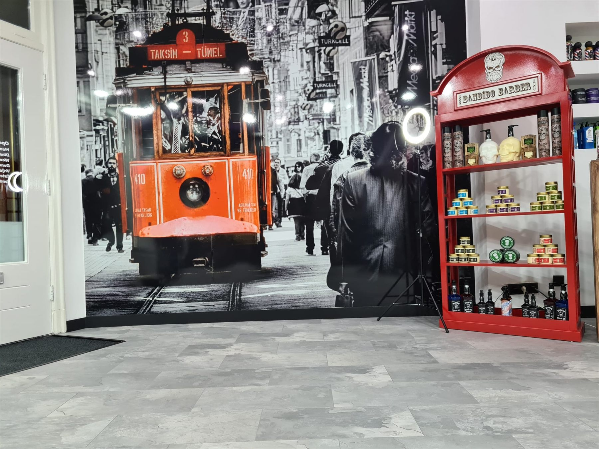
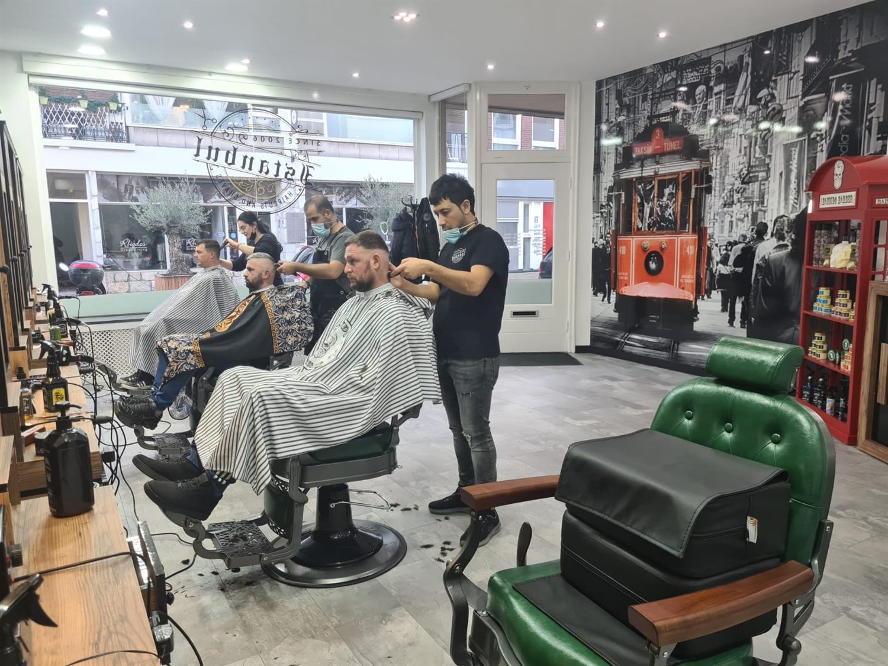
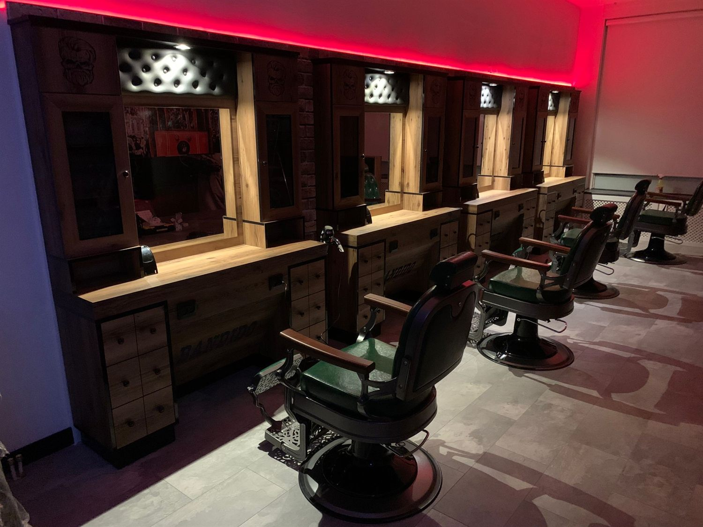

Vleesstraat 13 · Tiel
Sinds 2006 knippen en scheren wij aan de Vleesstraat. Ahmet, Sibel en Samet staan voor u klaar.
4,8 uit 3230 beoordelingen
De zaak
Op de wand rijdt tram 410 door een zwart-wit Istanbul. Zo werkt deze pagina ook: kleur krijgt alleen wat u kunt aanraken. Beweeg over een foto en de zaak komt tot leven.


“Ik kom hier al een aantal jaren en ben dik tevreden.”Marvin van Leeuwen · geholpen door Ahmet
Uw plek
Hieronder staat de echte agenda van de zaak. Kies Ahmet, Sibel of Samet, kies een behandeling en leg uw plek vast. U hoeft niets te bellen en niets af te wachten.
Liever even overleggen? Bel de zaak Stuur een appje
Donderdag tot 21.00 uur.
De enige avond in de week dat u na het werk nog rustig terecht kunt. Die plekken gaan als eerste weg, dus leg hem op tijd vast.
Behandelingen
Elke regel hieronder is meteen een knop. Tik op wat u wilt en u staat in de agenda.
Achter de stoel
Heeft u een vaste kapper? Kies die dan gewoon in de agenda. Dan zit u bij wie u gewend bent.
Praktisch
| maandag | 10.00 tot 18.00 |
|---|---|
| dinsdag | 09.00 tot 18.00 |
| woensdag | 09.00 tot 18.00 |
| donderdag | 09.00 tot 21.00 |
| vrijdag | 09.00 tot 18.00 |
| zaterdag | 09.00 tot 17.00 |
| zondag | gesloten |